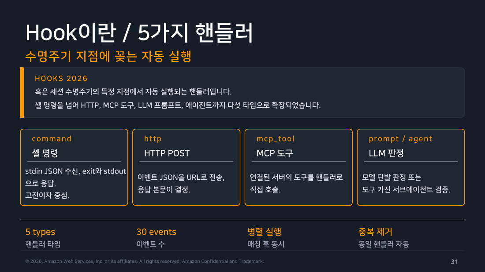
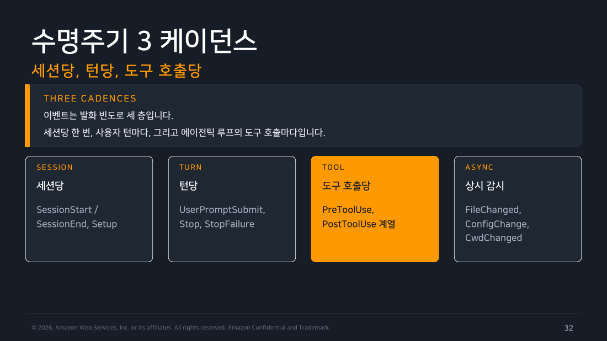
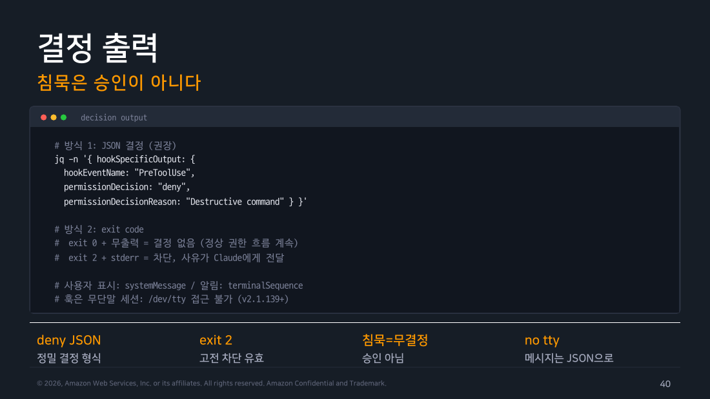

Part 3 — Hooks 아키텍처¶
한 줄 요약¶
훅은 세션 수명주기의 특정 지점에서 자동 실행되는 핸들러입니다. 셸 명령을 넘어 HTTP·MCP 도구·LLM 프롬프트까지 다섯 타입으로 확장되어 있으며 침묵은 승인이 아니라 "결정 없음"이라는 원칙으로 동작합니다.
왜 알아야 하나¶
Part 2까지는 권한 규칙과 모드가 "이 도구 호출을 허용할지"를 정적으로 판단하는 걸 봤습니다. 근데 이걸로는 표현 못 하는 요구가 있습니다. "이 커밋 메시지에 특정 문구가 없으면 막고 싶다"거나 "파일 수정 직후에 자동으로 포맷터를 돌리고 싶다" 같은 것들이요. 훅은 세션 진행 중 특정 시점마다 내 코드를 끼워 넣어 동적으로 개입하게 해주는 장치이고 정확히 이 틈을 메웁니다.
1. 다섯 핸들러 타입¶
훅이 실행되는 방식(핸들러)은 다섯 가지입니다.
- command — 셸 명령을 실행해 stdin으로 JSON을 받고 exit code와 stdout으로 응답합니다. 가장 고전적이고 중심적인 형태입니다.
- http — 이벤트 JSON을 지정한 URL로 POST하고 응답 본문이 결정을 좌우합니다.
- mcp_tool — 이미 연결된 MCP 서버의 도구를 핸들러로 직접 호출합니다.
- prompt — 모델에게 단발 판정을 맡깁니다("이 커밋 메시지가 적절한가?" 같은 질문).
- agent — 도구를 가진 서브에이전트를 동원해 더 복잡한 검증을 시킵니다.
무엇을 쓸지는 Part 4에서 실전 예시로 보고 지금은 이런 다섯 종류가 있다는 것만 알면 됩니다. 매칭되는 훅이 여러 개면 병렬로 실행되고 동일한 핸들러가 여러 경로로 중복 등록됐다면 자동으로 중복 제거됩니다.

▲ 교재 슬라이드 31 — Hook이란 / 5가지 핸들러
2. 언제 발화하는가 — 3케이던스¶
교재 기준 30개나 되는 이벤트를 다 외우는 대신, 발화 빈도가 다른 세 층으로 나눠 이해하면 훨씬 수월합니다.
- 세션당 —
SessionStart/SessionEnd처럼 세션 하나에 한 번(또는 재개·종료 시점에) 발화. - 턴당 —
UserPromptSubmit,Stop,StopFailure처럼 사용자가 프롬프트를 보낼 때마다 발화. - 도구 호출당 —
PreToolUse,PostToolUse계열처럼 에이전틱 루프가 도구를 부를 때마다 발화.
flowchart TD
S["세션 시작"] --> SS["SessionStart<br/>(세션당 1회)"]
SS --> T1["사용자 프롬프트 입력"]
T1 --> UPS["UserPromptSubmit<br/>(턴당)"]
UPS --> LOOP["에이전틱 루프"]
LOOP --> PRE["PreToolUse<br/>(도구 호출당)"]
PRE --> TOOL["도구 실행"]
TOOL --> POST["PostToolUse<br/>(도구 호출당)"]
POST -->|"루프 계속"| PRE
POST -->|"턴 종료"| STOP["Stop / StopFailure<br/>(턴당)"]
STOP -->|"다음 프롬프트"| T1
STOP -->|"세션 종료"| SE["SessionEnd<br/>(세션당 1회)"]
style S fill:#673ab7,stroke:#4527a0,stroke-width:3px,color:#fff
style SS fill:#e3f2fd,stroke:#1976d2,color:#000
style SE fill:#e3f2fd,stroke:#1976d2,color:#000
style UPS fill:#fff3e0,stroke:#ef6c00,color:#000
style STOP fill:#fff3e0,stroke:#ef6c00,color:#000
style PRE fill:#e8f5e9,stroke:#388e3c,color:#000
style POST fill:#e8f5e9,stroke:#388e3c,color:#000
▲ 교재 슬라이드 32 — 수명주기 3 케이던스
위 mermaid는 어떤 이벤트가 어떤 순서로 연결되는지 구조를 보여줍니다. 근데 이 3케이던스의 진짜 핵심은 순서가 아니라 빈도 차이입니다 — 세션당 이벤트는 세션 하나에 몇 턴이 오가든 딱 2번(시작·끝)만 발화하는데, 도구 호출당 이벤트는 턴 하나 안에서도 도구를 부르는 만큼 계속 발화합니다. 아래 애니메이션은 같은 3턴 동안 세 계층이 얼마나 다른 속도로 쌓이는지를 보여줍니다.

이 세 층 중 실무에서 가장 많이 쓰는 건 도구 호출당에 속하는 PreToolUse(도구 실행 직전)와 PostToolUse(도구 실행 직후)입니다. 이 둘만 확실히 알아도 이 챕터 예제 대부분을 따라갈 수 있습니다.
나머지 이벤트는 20개 넘게 더 있는데, 이건 필요할 때 찾아보는 참고 목록에 가깝습니다. 딱 하나만 미리 짚으면, PermissionDenied는 auto 모드 분류기가 거부했을 때 발화하며 재시도 정책을 걸 수 있는 지점이라 알아둘 만합니다.
Warning
공식문서(code.claude.com/docs/en/hooks) 대조 결과, 현재는 UserPromptExpansion, Elicitation, ElicitationResult, DirectoryAdded 같은 이벤트가 추가로 확인됩니다. 이 챕터가 나온 2026.07 교재 이후에 늘어난 것으로 보입니다. 정확한 최신 목록이 필요하면 이 문서의 "30개"라는 숫자보다 공식문서를 직접 확인하는 편이 안전합니다.
3. 왜 설정이 3단으로 나뉘어 있는가¶
훅 하나를 설정하려면 사실 3가지 질문에 순서대로 답해야 합니다. 예를 들어 "파일을 수정한 직후에 자동으로 포맷터를 돌리고 싶다"는 요구를 생각해봅시다.
- 언제 발화할까? → 파일 수정 직후니까
PostToolUse— 이게 이벤트 - 어떤 상황에만 적용할까? → 파일을 고치는 도구일 때만 — 이게 매처(
Edit,Write등) - 발화하면 뭘 실행할까? → 포맷터 스크립트 실행 — 이게 핸들러
이 세 질문의 답을 순서대로 채운 게 실제 설정입니다.
{ "hooks": {
"PreToolUse": [
{ "matcher": "Bash",
"hooks": [
{ "type": "command",
"if": "Bash(rm *)",
"command": "${CLAUDE_PROJECT_DIR}/.claude/hooks/block-rm.sh" }
] } ] } }
3단계로 나뉜 이유는 같은 이벤트(PostToolUse)라도 상황(매처)마다 다른 핸들러를 걸고 싶을 수 있기 때문입니다. 이 설정은 user·project·local settings뿐 아니라 managed, 플러그인의 hooks.json, 스킬·서브에이전트 frontmatter까지 총 6곳에 정의할 수 있고 Part 1에서 다룬 라이브 리로드 덕분에 파일을 저장하면 즉시 반영됩니다.
4. matcher 문법 — "분명 훅을 걸었는데 왜 안 돌지"¶
matcher는 문자 구성 자체가 해석 방식을 결정합니다. 이게 실전에서 자주 걸리는 함정이라 실제로 안 도는 상황부터 보고 규칙을 정리하겠습니다.
함정 1 — mcp__memory로 걸었는데 훅이 안 돈다. matcher가 영숫자·_·-·공백·쉼표·파이프로만 이루어져 있으면 정확히 그 글자 그대로의 문자열 매칭으로 취급됩니다. 실제 MCP 도구 이름은 mcp__memory__store, mcp__memory__search처럼 뒤에 도구명이 더 붙는데, mcp__memory라는 정확한 이름의 도구는 존재하지 않으니 절대 안 걸립니다. mcp__memory__.*처럼 정규식 문자를 명시적으로 넣어야 합니다.
함정 2 — Edit.*로 걸었는데 NotebookEdit까지 걸린다. 그 외 문자(정규식 기호 등)가 섞이면 자바스크립트 정규식으로 해석되는데, 앵커가 없어서 어디에 포함만 되어도 매칭됩니다. NotebookEdit이라는 이름 안에 Edit이 포함되어 있으니 같이 걸립니다. Edit만 정확히 잡고 싶으면 ^Edit$처럼 시작(^)과 끝($)을 명시해야 합니다.
정리하면 matcher는 *나 빈 문자열(전체 매칭), 영숫자류만(정확 문자열, 리스트는 Edit|Write처럼 |나 ,로 구분), 그 외 문자 포함(비앵커 정규식) 세 가지로 해석이 갈립니다.
5. if 필드 — 권한 규칙 문법으로 2차 필터링¶
매처가 "어떤 도구인가"를 거른다면, if 필드는 한 단계 더 좁혀서 그 도구 호출의 세부 내용까지 봅니다. 그리고 Part 2에서 배운 권한 규칙 문법을 그대로 재사용합니다.
이러면 Bash 도구 중에서도 rm으로 시작하는 명령일 때만 훅이 실행됩니다. npm test && git push처럼 &&로 이어진 서브커맨드까지 검사하고 echo $(rm -rf /)처럼 명령 치환 안에 숨겨도 매칭됩니다. VAR=x git push처럼 선행 변수 대입이 붙어도 이를 제거한 뒤 매칭합니다. 다만 파싱이 불가능하면 fail-open(실행 허용) 처리되므로, if는 어디까지나 훅 호출 자체를 아끼기 위한 보조 필터이지 강제 수단이 아닙니다. 진짜 강제는 여전히 권한 시스템(Part 2)의 몫입니다.
6. 결정 출력 — 침묵은 승인이 아니다¶
훅이 실행되면 세 가지 결과 중 하나로 끝납니다.
| 훅이 하는 것 | 결과 |
|---|---|
| "막아라"라고 응답 | 도구 호출이 차단됨 |
| "됐다"라고 응답 | 도구 호출이 그대로 실행됨 |
| 아무 응답 안 함(무결정) | 훅이 없었던 것처럼 원래 권한 흐름(모드·규칙)이 이어서 판단 |
"아무 말 안 함"이 "승인"은 아니라는 게 핵심입니다. 그냥 "나는 관여 안 할게, 원래대로 진행해"라는 뜻입니다.
이 3가지를 실제로 표현하는 방법은 두 가지입니다. JSON으로 정밀하게 hookSpecificOutput.permissionDecision에 "deny" 등을 채워 응답하거나, exit code로 간단하게 exit 0 + 무출력(무결정) / exit 2 + stderr 출력(차단, 사유가 Claude에게 전달)으로 응답합니다.

▲ 교재 슬라이드 40 — 결정 출력
구현 세부사항(필요할 때 참고)
- 출력 — 사용자에게 보여줄 메시지는
systemMessage로, 터미널 알림은terminalSequence로 분리돼 있습니다. 훅은 무단말(no-tty) 세션으로 실행되어/dev/tty에 직접 접근할 수 없습니다(v2.1.139 이상). - 실행 형식 —
args가 있으면(exec form) 셸 없이 실행 파일을 직접 스폰해 인용부호·공백 걱정이 없고args가 없으면(shell form) 문자열 전체를 셸이 해석해 파이프나&&를 쓸 수 있는 대신 플레이스홀더를 직접 따옴표로 감싸야 합니다. Windows는.cmd심이 exec form에서 안 되니node+ 스크립트 조합을 권장합니다. - 기본 타임아웃 —
command/http/mcp_tool은 600초,prompt는 30초,agent는 60초입니다.async: true를 걸면 백그라운드로 돌며 턴을 막지 않습니다.
command 훅은 stdin으로, http 훅은 POST 본문으로 session_id, prompt_id, cwd, permission_mode, tool_name, tool_input 같은 필드가 담긴 JSON을 받는다는 것도 다음 절 실습에서 실제로 확인합니다.
직접 해보기 — Lab 2: 헤드리스(-p)에서도 훅이 도는가¶
교재는 훅이 "에이전틱 루프의 도구 호출마다" 발화한다고만 설명하고 이게 대화형 세션에서만인지 -p 헤드리스에서도인지는 명시하지 않습니다. 직접 확인했습니다.
실험 1 — PreToolUse/PostToolUse가 헤드리스에서 발화하는가
.claude/settings.json에 PreToolUse·PostToolUse 각각에 stdin JSON을 그대로 로그 파일에 append하는 command 훅을 걸고 claude -p로 파일 생성을 시켰습니다.
$ claude -p "lab2.txt 파일을 만들고 내용은 hello로 채워줘." --output-format json
{..., "result":"완료."}
$ cat hook-log-pre.txt
{"session_id":"9f69af4b-...","transcript_path":"...","cwd":"...","prompt_id":"...",
"permission_mode":"acceptEdits","effort":{"level":"high"},
"hook_event_name":"PreToolUse","tool_name":"Write",
"tool_input":{"file_path":".../lab2.txt","content":"hello"},"tool_use_id":"toolu_01YACk..."}
$ cat hook-log-post.txt
{..., "hook_event_name":"PostToolUse", ..., "tool_response":{"type":"create", ...}}
두 훅 모두 발화했고 받은 JSON 필드도 앞서 본 스키마(session_id, prompt_id, cwd, permission_mode, effort, tool_name, tool_input)와 정확히 일치했습니다. PostToolUse에는 추가로 tool_response가 붙어 실제 실행 결과(파일 생성 여부, 패치 내용)까지 확인할 수 있었습니다.
직접 해보고 알게 된 것 — 훅은 대화형 여부와 무관하게 발화한다
-p 헤드리스는 "사람에게 물어보는" 절차(프롬프트)만 건너뛸 뿐, 훅이 세션 수명주기에 개입하는 메커니즘 자체는 대화형 세션과 동일하게 작동합니다. 즉 CI 파이프라인에서 -p로 돌리는 자동화에도 PreToolUse 가드나 PostToolUse 후처리 훅을 그대로 걸 수 있다는 뜻입니다.
실험 2 — 훅의 JSON deny 결정이 실제로 도구 호출을 막는가, 그리고 막힌 호출은 다음 단계로 넘어가는가
PreToolUse에 Write 매처로 무조건 permissionDecision: "deny"를 반환하는 훅을 걸고 PostToolUse는 그대로 로그를 남기게 둔 채 파일 생성을 다시 시켰습니다.
$ claude -p "lab3.txt 파일을 만들고..." --output-format json
{..., "permission_denials":[
{"tool_name":"Write","tool_use_id":"toolu_01NWgPQ...",
"tool_input":{"file_path":".../lab3.txt","content":"hello"}}
], "result":"파일 생성이 차단되었습니다 (\"Lab 2 test block\" 오류). 권한 설정이나 훅에서 막고 있는 것 같습니다 — 확인해 주시겠어요?"}
$ ls lab3.txt
ls: lab3.txt: No such file or directory
$ cat hook-log-post.txt
cat: hook-log-post.txt: No such file or directory
훅의 JSON 결정은 실제로 파일 생성을 막았습니다. PostToolUse 로그 파일 자체가 생기지 않은 걸 보면 차단된 호출은 PostToolUse까지 아예 도달하지 않는다는 것도 확인됐습니다.
permission_denials 필드, Part 2 발견의 정정
Part 2 Lab 1에서는 settings.json의 permissions.deny 규칙이 만든 차단이 permission_denials에 안 잡히는 걸 보고 "이 필드는 프롬프트가 필요했던 경우만 기록한다"고 잠정 결론 냈는데, 이번에는 훅의 deny 결정이 정확히 permission_denials에 기록됐습니다. 두 결과를 합치면 이 필드는 "프롬프트 필요 여부"가 아니라 어느 주체가 차단했는지(정적 settings 규칙 vs 훅·모드 판단)에 따라 기록 여부가 갈리는 것으로 보입니다. Part 2 본문에 이 정정된 이해를 반영해뒀습니다.
흔한 오해 바로잡기¶
"훅은 대화형 세션에서만 동작한다" — 아닙니다. -p 헤드리스에서도 PreToolUse/PostToolUse를 포함한 도구 호출 훅이 동일하게 발화합니다. 헤드리스가 건너뛰는 건 사람에게 묻는 절차뿐입니다.
"훅이 아무 응답도 안 하면 승인된 것으로 처리된다" — exit 0 + 무출력은 "결정 없음"이라는 뜻이고 그 뒤로는 정상적인 권한 흐름(모드·규칙)이 이어서 판단합니다. 침묵이 곧 승인은 아닙니다.
정리¶
훅은 command·http·mcp_tool·prompt·agent 다섯 타입의 핸들러로 세션당·턴당·도구 호출당 세 케이던스에 걸쳐 발화하며 매처와 if 필드로 어떤 호출에 개입할지 정밀하게 좁힐 수 있습니다. 결정은 JSON 또는 exit code로 표현하고 침묵은 항상 "결정 없음"으로 해석되어 정상 권한 흐름이 이어집니다. Lab 2로 확인한 대로 이 메커니즘은 대화형 세션에 국한되지 않고 헤드리스 자동화에도 그대로 적용됩니다. 훅의 차단 결정은 permission_denials에 흔적을 남긴다는 점에서 정적 권한 규칙과도 구분됩니다. 다음 파트는 이 아키텍처 위에서 실제로 자주 쓰는 훅 레시피와 디버깅 방법을 다룹니다.
출처¶
- Claude Code Deep Dive Workshop — Chapter 4 / Part 3: Hooks 아키텍처 (2026.07 판, s31~43)
- 공식 문서: Hooks reference